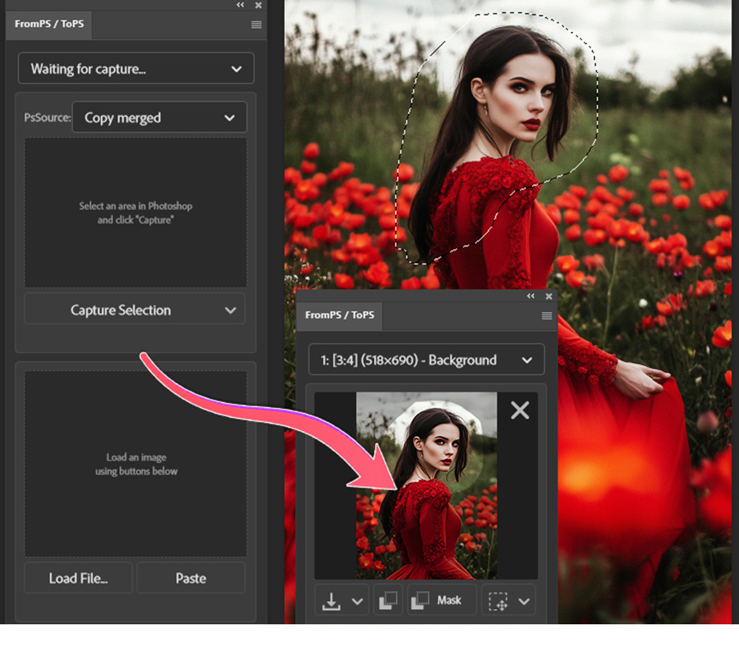

1
Select and capture
Make a selection in Photoshop. In FromPS, leave PsSource on Copy merged for the visible composite, then click Capture Selection.
2
Send the capture out
Export via Drag*, Copy Image*, Copy Mask*, or Save as PNG. FromPS calculates and displays the exact aspect ratio (e.g., [3:4]) alongside pixel dimensions — set the matching ratio preset in your AI generator to prevent image stretching and distortion.
